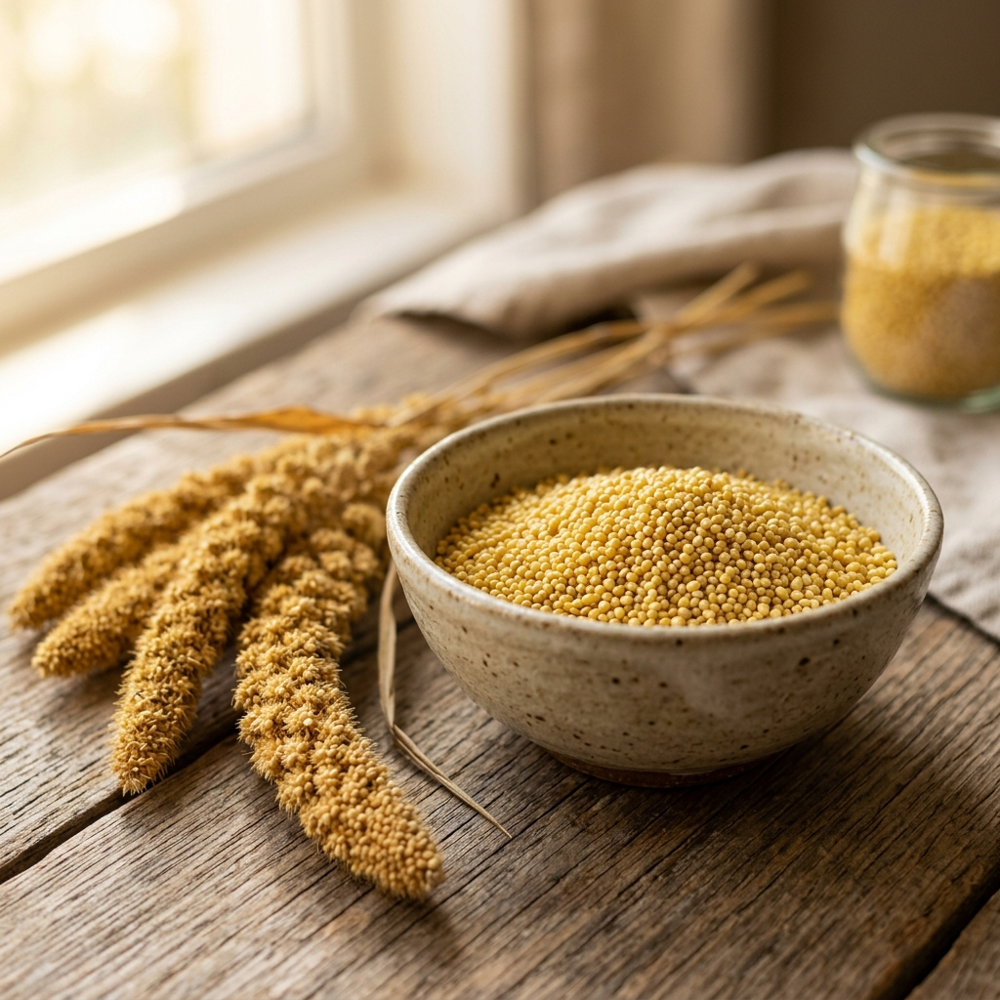

Foxtail Millet (Thinai) — The Second Biggest Millet in the World That Most Buyers Still Underestimate
There is a pattern I have noticed over the past few years at SNS Global Traders. Buyers come in asking about Finger Millet or Pearl Millet. They know those names. They have done their research. But when I mention Foxtail Millet, I usually get a pause.
Not a disinterested pause. More like a curious one. And once I explain what this grain actually contains and where it is headed commercially, the conversation changes.
Foxtail Millet is the second largest millet in the world by global production. It has been cultivated across Asia and Africa for centuries. And right now in 2026, it is sitting at the intersection of two of the fastest-growing food categories in the world: diabetic nutrition and functional foods.
Let me explain why that matters for your business.
What Foxtail Millet Actually Is
Foxtail Millet, scientifically known as Setaria italica, goes by different names depending on where you are. In Tamil Nadu we call it Thinai. In Hindi it is Kangni. In Kannada it is Navane. In Telugu it is Korra. Internationally, it is Foxtail Millet or sometimes Kangni Millet.
It is a small, golden-yellow grain with a mild, slightly nutty flavour. It matures faster than almost any other cereal crop, typically within 60 to 90 days, which makes it one of the most reliable grains to source year-round. It thrives in semi-arid conditions with minimal water and agrochemical input, which puts it in a strong position as climate unpredictability continues to affect global agriculture.
What the Research Shows About Its Nutrition
This is where Foxtail Millet earns serious attention from food manufacturers and health brands.
According to research published in the Bhartiya Krishi Anusandhan Patrika journal, Foxtail Millet contains essential amino acids including lysine, methionine, and leucine which are often limited in other cereal grains. This makes it a particularly valuable protein source for vegetarian and plant-based food formulations where complete amino acid profiles are otherwise difficult to achieve.
Its lipid content is relatively low at around 2 to 4 percent, but what stands out is the fatty acid profile. It contains a favourable ratio of omega-3 to omega-6 fatty acids, primarily linoleic acid and alpha-linolenic acid, which support cardiovascular health. That combination of low fat content and heart-healthy fatty acids is genuinely useful for functional food development.
The B-vitamin content is notable too. Foxtail Millet provides thiamine at 0.59 mg per 100 grams, niacin at 3.2 mg per 100 grams, and pyridoxine at 0.38 mg per 100 grams, all of which support energy metabolism and neurological function. It also contains vitamin E at 0.5 mg per 100 grams, which supports skin health and immune function.
Its dietary fibre content ranges from 6 to 12 percent, which promotes digestive health and contributes to its low glycemic index. According to research cited by the National Centre for Biotechnology Information, Foxtail Millet has high consumer acceptability when formulated into food products including biscuits, cereals, and snack bars, with mean acceptability scores above 8 out of 10.
For buyers in the diabetic nutrition space specifically, the low glycemic index is the headline feature. It provides high-quality protein and complex starches that offer blood sugar control without the rapid glucose spike associated with refined flours. That functional property alone is driving significant procurement interest globally in 2026.
Where the Global Demand Is Coming From
The current market for Foxtail Millet is being driven by two distinct buyer categories, according to trade data from March 2026.
The first is human nutrition. Food and beverage manufacturers are incorporating Foxtail Millet into dry extruded cereals, multigrain staples, low-GI biscuit mixes, and functional snack formulations. East Asian markets have historically been the largest consumers, but European and North American health food brands are now actively sourcing it for clean-label, gluten-free, and diabetic-friendly product lines.
The second is specialty avian feed. Foxtail Millet is the dominant variety used in bird seed blends across Europe, North America, and the Middle East, where it is sold in its unhulled form as yellow millet. This creates a parallel high-volume export stream that runs alongside the food-grade market.
The wider millets market is valued at approximately USD 12.87 billion in 2026, and Foxtail Millet is positioned strongly within that as a versatile, dual-purpose export grain. Consumer demand for natural, blood-sugar-regulating ingredients in instant cereal formats is one of the key trends driving organic Foxtail Millet exporters forward right now.
Why India Is the Right Source
Foxtail Millet is grown across Tamil Nadu, Andhra Pradesh, Karnataka, Rajasthan, and Uttar Pradesh in India. The crop requires less water than wheat and rice, has a short cultivation period, and is tolerant to drought and soil nutrient deficiency. That makes Indian supply both abundant and resilient across seasons.
A 2026 research paper published in the journal Plant Biology reviewed 260 accessions from 19 countries and confirmed that despite a global supply-demand imbalance driven by increased consumer awareness, India remains among the most important source countries for quality Foxtail Millet. The study notes that market demand has increased substantially due to growing consumer awareness of its nutritional benefits and its incorporation into health food products, functional foods, and gluten-free alternatives.
That supply-demand tension is something buyers sourcing right now are well-placed to navigate before pricing reflects the full extent of international demand growth.
What We Offer at SNS Global Traders
Every lot of Foxtail Millet we export is machine-cleaned, Sortex processed, moisture-controlled, and packed to your specification. We work with 25 kg and 50 kg PP bags for commercial volumes and retail-ready packs for brands that need private label support.
We are APEDA registered, IEC certified, and FIEO members. Documentation is clean and every shipment is handled with the same care regardless of order size.
If Foxtail Millet is something your product line or supply chain could benefit from, I would be glad to discuss your requirements directly.
Research Sources & References
- • Bhartiya Krishi Anusandhan Patrika, Foxtail Millet Health Potential, 2025
- • National Centre for Biotechnology Information, Foxtail Millet Food Products Assessment
- • Plant Biology Journal, Foxtail Millet Germplasm Panel Study, 2026
- • Tradologie, Foxtail Millet Global Trade Guide, March 2026
- • Springer Nature, Nutrition Potential of Foxtail Millet